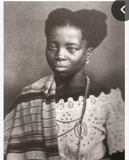
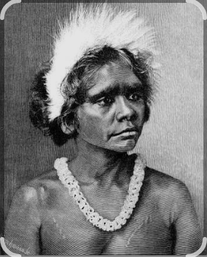
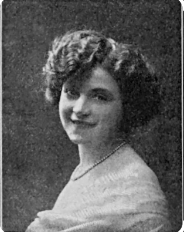

Sobre nós
A Casa Sankofa é um espaço dedicado à valorização da ancestralidade, da espiritualidade e da diversidade cultural. Desde 1889, construímos nossa trajetória a partir do respeito aos saberes tradicionais, da preservação de conhecimentos e da conexão entre passado, presente e futuro.
Mais do que uma loja, somos um espaço de encontro, aprendizado e valorização das diferentes formas de expressão cultural e espiritual.
Nossa história
Nossa trajetória começou em 1889, a partir da iniciativa de três mulheres que compartilhavam o desejo de acolher pessoas e preservar conhecimentos que atravessavam gerações.
Inicialmente, a Casa Sankofa surgiu como um espaço comunitário de apoio, oferecendo acolhimento, alimentação, vestimentas e oportunidades de aprendizado. Com o passar dos anos, suas atividades cresceram, incorporando a comercialização de produtos tradicionais, artesanais e espirituais.
Ao longo das gerações, a iniciativa se transformou em um empreendimento familiar, mantendo seus valores originais. Hoje, contamos com uma loja física, uma plataforma digital e iniciativas voltadas à preservação cultural e ao desenvolvimento social.
Fundadoras
A Casa Sankofa nasceu da união de três mulheres com trajetórias e conhecimentos diferentes, mas com um propósito em comum: preservar saberes, acolher pessoas e valorizar a diversidade cultural e espiritual. Amélia, Yara e Helena uniram suas experiências e tradições, criando um espaço onde os conhecimentos afro-brasileiros, indígenas e esotéricos pudessem coexistir, se complementar e ser transmitidos às próximas gerações.

Amélia de Oxum
Dedicada aos saberes afro-brasileiros, às propriedades tradicionais das ervas e às práticas de espiritualidade e cuidado.

Yara Aruá
Guardiã de conhecimentos indígenas relacionados às plantas, sementes, técnicas tradicionais e à transmissão oral de histórias.

Helena Valença
Interessada nas tradições esotéricas, na astrologia, no simbolismo, nas cartas e na filosofia.
Três caminhos, diferentes origens e um mesmo propósito: construir um legado de conhecimento, acolhimento e união.
O significado de Sankofa
Sankofa é um conceito de origem akan que representa a importância de olhar para o passado e recuperar aquilo que não deve ser esquecido.
Esse significado traduz nossa essência: reconhecer nossas origens, valorizar os conhecimentos ancestrais e utilizar esses aprendizados para construir um futuro com mais consciência, respeito e transformação.
"Honramos aquilo que veio antes de nós, cultivamos o que somos hoje e construímos caminhos para o amanhã."
Nosso compromisso
Acreditamos que a cultura e a espiritualidade devem ser valorizadas, preservadas e compartilhadas. Por isso, além de nossa loja física e plataforma digital, promovemos eventos culturais, oficinas, palestras e rodas de conversa.
Por meio do Instituto Sankofa e de nossas iniciativas sociais, buscamos contribuir com a educação, a preservação cultural, o combate à intolerância religiosa e o fortalecimento da comunidade.